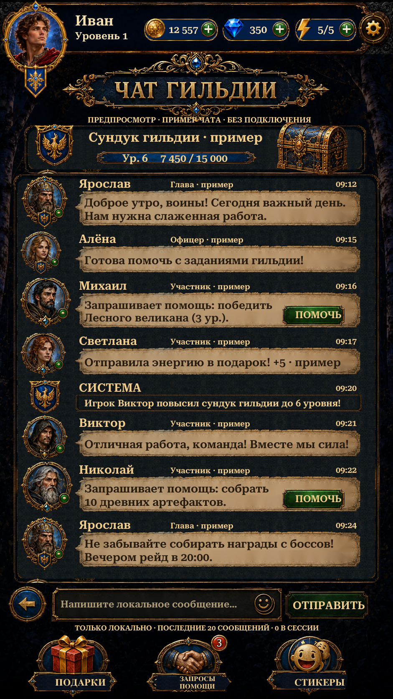

Visual Page23 · Team Chat
Original portraits, guild chest, Russian title, parchment messages and footer artwork, isolated through Scenario. Native scrollable history and bilingual composer. Sending adds text only to the local session; samples, chest progress and social actions are previews.
Implementation and checks · Reference comparison · Asset provenance · Scenario cost

Actual Unity Play Mode ·941×1672·Russian·isolated test save.21 distinct targeted Unity tests passed, including Team Hub/Ranking regressions. The8 Team Chat checks passed again after final footer fitting. Ten Team Chat captures. Scenario:17 isolation jobs,51CU including3 rejected crops; no RGB generation.
Initial visual implementation with documented differences. Online messaging, moderation, membership, help/gifts and chest rewards are not connected. No APK or physical-phone/soft-keyboard verification.